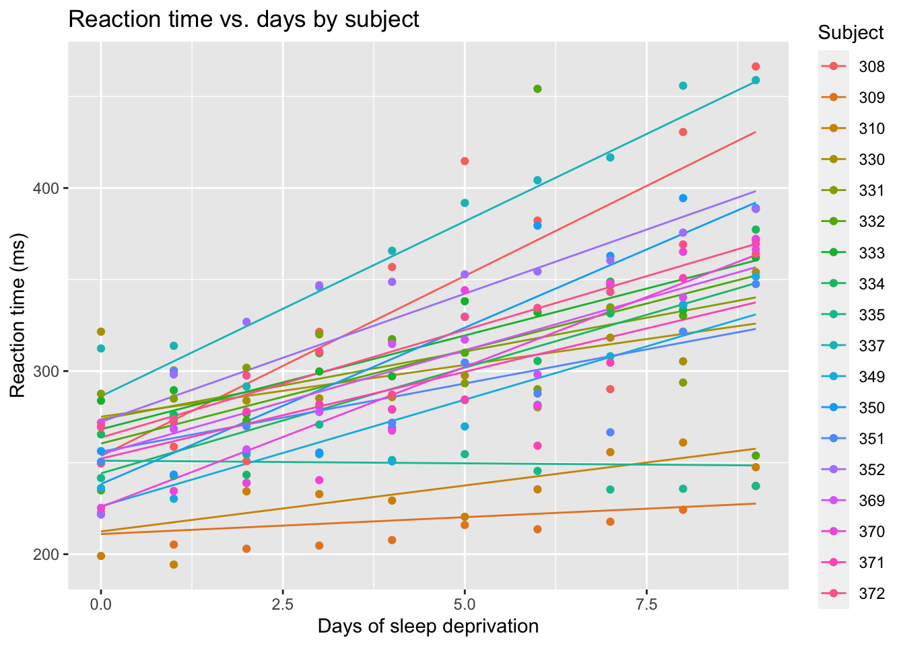

You might have heard of terms like random effects and mixed-effects models, and perhaps you, like many others before, have found the terms confusing, frightening, and overwhelming. Today we are going to sort all that out!
To begin, an effect is another name for a regression coefficient. Everything we’ve seen so far has been a fixed effect, which are treated differently than random effects. A regression model can include either fixed effects, random effects, or both. A model that includes both fixed and random effects is said to have mixed effects.
6.1 Hierarchical data
Real-world science often sees data grouped according to some known structure of the study. For instance, in an agricultural experiment, the yield of crops from the same field is generally more alike than crops from different fields, even if all fields in question received the same treatment. Why? Maybe the soil was generally better quality in one field, or one got more rain than the other, or the treatments weren’t applied with perfect consistency across fields.
In order to account for factors like these, agricultural researchers divide fields into plots and apply a different treatment to each plot. This is an example of hierarchical data: there are measurements of crop yields for each plot in a field. We say that the plots are nested within the fields, and that the field ID is a grouping feature in the data.
6.2 Is my effect fixed? Or random?
Hierarchical grouping features can be modeled with either fixed or random effects. The choice depends on your intended interpretation. If you will have a reason to read the estimated coefficient off the summary table, then that’s a fixed effect. If the grouping feature is only included so you can account for structure in the data, then that’s a random effect. Random effects appear both in designed experiments and in observational studies. We’ve mentioned that the measured yield in an agricultural experiment usually depends on the specific conditions of each field. But when an experiment has identified the best way to grow a crop, it will be applied to fields that weren’t in the study. In that case, we care how different the yields will be in random fields that come from the population of farm fields, not the specific fields that were used in the experiment. This is a classic example of a random effect.
A side note: random effects models make more intuitive sense if you think like a Bayesian. For each level of the grouping feature, sample its effect from a random distribution (which almost always has a Normally distributed prior distribution), and then use the sampled effect in the model for the observed response. This two (or more) step process should match the levels of the hierarchy in the data.
6.3 Example: oat yields
Now we will analyze just such an experiment, which tests the production of three varieties of oats grown with four different quantities of nitrogen fertilizer. Together, we call the variety and the nitrogen treatments because they are conditions of he experiment that are in our control. The goal is to identify varieties and fertilizers that consistently generate a greater yield of oats than the others.
In order to identify a consistent difference between treatment combinations, we need to replicate the treatments in multiple experimental units. That’s because without replication we will not know whether any differences we observe are due to the treatments or to natural variability (no matter how careful you are to treat plots the same, you cannot grow exactly the same quantity of oats twice).
How can you achieve replication? If you randomly choose a few areas to measure from within the same plot, then you can estimate the way that parts of a plot differ from each other. Generally this is not very useful because you will go on to grow the oats in different plots than the one in the experiment, and the differences between parts of the same plot are likely to be smaller than the differences between entirely separate plots.
So in order to accurately estimate how different the yields will be when the oats are grown by farmers instead of experimenters, the experimenters must replicate each treatment in units that are relevant to the farmers - in this case, that means planting multiple plots with each combination of variety and nitrogen. The actual growing conditions will differ slightly even between plots that were given the same treatment and we want to estimate how big those differences are in practice.
In this case the plots are assigned to blocks, which are a group of plots that are linked somehow. In this case blocks are locations, which helps ensure each block has consistent soil and environmental conditions.
6.3.1 The oats data
We are finally ready to look at the data.
library(MASS)data(oats)summary(oats)
B V N Y
I :12 Golden.rain:24 0.0cwt:18 Min. : 53.0
II :12 Marvellous :24 0.2cwt:18 1st Qu.: 86.0
III:12 Victory :24 0.4cwt:18 Median :102.5
IV :12 0.6cwt:18 Mean :104.0
V :12 3rd Qu.:121.2
VI :12 Max. :174.0
The oats data frame has five columns and 72 rows. Yield (Y, in pounds) will be the response. As features, there are three varieties (V), six blocks (B), and four numerical nitrogen treatments (N). I’ve included a picture of the first 28 rows of data to show you how the data is structured for a random effect.
Picture of the first 28 rows of the oats data set, with shading used to indicate the rows that belong to the same block (B)
The nitrogen treatments are in hundredweight (cwt) per acre, which is a numerical value, but are written as characters. So we will need to convert those to numeric by taking the first three characters.
# convert nitrogen to numericoats$nitrogen =as.numeric(substr(oats$N, 1, 3))
Now let’s look at a plot of the data:
Code
ggplot(oats) +aes(x=nitrogen, y=Y, color=V) +geom_point() +facet_wrap(~B, ncol=3) +xlab("Nitrogen (cwt/acre)") +ylab("Yield (pounds)") +ggtitle("Yield of oats per plot (1/160 acre)")
Each facet depicts the data from one block. There are apparent differences between blocks and an increasing trend of yield with nitrogen. The trend looks like it could be linear. If there is a consistent difference in yield between the varieties, it is small.
So block matters, even though it is not of interest in the analysis. Treatments were applied and measured at the plot level, so there is one observation per experimental unit. These observations are only independent after accounting for the block grouping - remember that regression assumes the residuals are independent.
6.3.2 Fixed-effects model
Before stepping into a mixed-effects example, I’d like to show you what it looks like if we model the data using fixed effects for everything. I’ll present the summary but not the diagnostic plots in order to save time.
# estimate the fixed-effects modeloats_fixed_model =lm(Y ~ nitrogen + V + B, data=oats)summary(oats_fixed_model)
Call:
lm(formula = Y ~ nitrogen + V + B, data = oats)
Residuals:
Min 1Q Median 3Q Max
-30.519 -12.959 0.781 10.706 34.631
Coefficients:
Estimate Std. Error t value Pr(>|t|)
(Intercept) 113.761 5.652 20.126 < 2e-16 ***
nitrogen 73.667 8.075 9.123 3.97e-13 ***
VMarvellous 5.292 4.423 1.196 0.236
VVictory -6.875 4.423 -1.554 0.125
BII -28.083 6.255 -4.490 3.10e-05 ***
BIII -39.417 6.255 -6.302 3.23e-08 ***
BIV -37.167 6.255 -5.942 1.33e-07 ***
BV -44.417 6.255 -7.101 1.33e-09 ***
BVI -39.083 6.255 -6.249 3.99e-08 ***
---
Signif. codes: 0 '***' 0.001 '**' 0.01 '*' 0.05 '.' 0.1 ' ' 1
Residual standard error: 15.32 on 63 degrees of freedom
Multiple R-squared: 0.7155, Adjusted R-squared: 0.6794
F-statistic: 19.81 on 8 and 63 DF, p-value: 1.507e-14
This summary should by now look familiar. As usual we will ignore the Call and Residuals sections. There are coefficient estimates for one intercept, a slope for nitrogem two varieties, and five blocks. Recall that there are three varieties and six blocks: the reference level for each of these categorical features has been included in the intercept. Later, we will return to the coefficient estimates and the residual standard error.
6.3.3 Mixed-effects model
We will treat block as a random effect because the blocks are a random sample from the population of blocks where the oats may ultimately be grown, each of which will have its own localized growing conditions. Our random effects analysis allows us to estimate how much of the variability in oat harvest would be due to differences between blocks, vs. differences in nitrogen and variety of oats (which are our fixed effects because they are consistent across blocks).
6.3.3.1 Software to estimate the model
There are several R packages that implement random effects in regression. lme4 is the most-used and brms is the Bayesian equivalent, which also offers some great features that aren’t available in lme4. Both of them use a formula syntax similar to the lm() and glm() functions that you’ve already seen. The only difference is that the random effects need to be specified using a special notation: they are written as two parts wrapped in parentheses. The first part indicates the effect that changes with the grouping factor, and the second part indicates what variable is the grouping factor.
# create a mixed-effects model for oatsoats_model =lmer(Y ~ nitrogen + V + (1|B), data=oats)# make the residual vs fitted plot for the model:fit_v_resid_oats =plot(oats_model)# make the QQ plot:qq_oats = lattice::qqmath(oats_model)# draw the plotscowplot::plot_grid(fit_v_resid_oats, qq_oats, ncol=2)
# show the model summarysummary(oats_model)
Linear mixed model fit by REML ['lmerMod']
Formula: Y ~ nitrogen + V + (1 | B)
Data: oats
REML criterion at convergence: 588
Scaled residuals:
Min 1Q Median 3Q Max
-1.84069 -0.80849 0.04022 0.70484 2.22148
Random effects:
Groups Name Variance Std.Dev.
B (Intercept) 245.0 15.65
Residual 234.7 15.32
Number of obs: 72, groups: B, 6
Fixed effects:
Estimate Std. Error t value
(Intercept) 82.400 7.516 10.964
nitrogen 73.667 8.075 9.123
VMarvellous 5.292 4.423 1.196
VVictory -6.875 4.423 -1.554
Correlation of Fixed Effects:
(Intr) nitrgn VMrvll
nitrogen -0.322
VMarvellous -0.294 0.000
VVictory -0.294 0.000 0.500
The residual vs fitted plot has a bit of a fan shape and the QQ plot is not perfect. Maybe there is a better model? More on that later.
6.3.4 Interpretation
First, let’s look at the layout of the summary for a mixed-effects model, beginning with the parts that are already familiar. In the picture below, I’ve highlighted the Call (Green), Residuals (Purple), and Fixed Effects (Red) sections of the lmer() model summary. These are just about the same as the sections in the lm() model summary except that there are no p-values in the Fixed Effects table (due to a philosophical choice by the lme4 package developers).
Summary output of a mixed-effects model, with boxes highlighting the Call, Residuals, and Fixed Effects sections
With those out of the way, let’s now look at the parts of the model summary that are new. The REML criterion at convergence is not interesting to us. The correlation of fixed effects is rarely interesting. The only new and useful information, then, is the summary of random effects.
Again, let’s eliminate the parts that we already know about. The bottom line reports that there are 72 observations and six blocks. Ok, we knew that. What’s left is a table that kind of looks like the fixed effect summary. We’ve got rows for B and Residual, which the table header tells us are called Groups.
B is there because the data are grouped by the blocks. Since that is the only grouping feature, any other variance must be assigned to the individual observations, which we saw in Chapter 2 is called residual variance — hence the name. The random effect for B is a random intercept (more about that later). That leaves two columns, Variance and Std.Dev.. Standard deviation is the square root of variance so these columns are telling us the same thing and we can ignore one of them. Standard deviation is more interesting because it is telling us the typical difference in the yield between blocks (row B), as well as the typical residual error (row Residual).
While the fixed effects section has the same meaning as the table of coefficient estimates from a fixed-effects model, there is one important difference in the table’s contents: the fixed effects section includes only the intercept, two varieties, and the slope for nitrogen. Blocks are gone from the fixed effects and are instead included in random effects, due to how we specified the model. Despite this difference, the actual fixed effects coefficients and their standard errors are identical to those for the old fixed-effects model. This is not a general feature of mixed-effects models! It happens here because the model is perfectly balanced, which means that each combination of variety, nitrogen, and block has exactly the same number of observations. Try re-estimating the models after removing some rows from oats at random to see how the estimates change in the two models.
6.3.5 Visualize the fitted model
We have allowed a random intercept for each block, which applies to all of the plots within the block. So, the fitted model should have the same slopes and variety effects in each block, but with a block effect that shifts the regression lines up or down to account for between-block differences. Here is the plot of the data, overlaid with lines to represent the fitted model:
Code
# attach a column of fitted values to the oats data.frameoats$fitted =predict(oats_model, newdata=oats)# plot the data with the fitted model linesggplot(oats) +aes(x=nitrogen, y=Y, color=V) +geom_point() +geom_line(mapping=aes(x=nitrogen, y=fitted, color=V)) +facet_wrap(~B, ncol=3) +xlab("Nitrogen (cwt/acre)") +ylab("Yield (pounds)") +ggtitle("Model for yield of oats per plot (1/160 acre)")
6.4 Example: sleep study
Now let’s look at a different example. Sleep scientists enrolled 18 subjects and kept them in a controlled habitat for ten days. The subjects were only allowed to spend three hours in bed each night, and their reflex reaction time was measured daily.
6.4.1 The sleepstudy data
This data is available in the lme4 package, which you have already imported. Let’s load the data and look at it.
There are three columns and 180 rows. The response, Reaction, is numeric, as is the Days feature. Subject refers to a person in the study, so even though the data are numbers, we should treat them as categories. As usual, let’s plot the data.
Code
# Create a scatterplot of fitted reaction times against Daysggplot(sleepstudy) +aes(x = Days, y = Reaction, color = Subject) +geom_point()
Code
labs(title ="Reaction time vs. days by subject",x ="Days of sleep deprivation",y ="Reaction time (ms)")
$x
[1] "Days of sleep deprivation"
$y
[1] "Reaction time (ms)"
$title
[1] "Reaction time vs. days by subject"
attr(,"class")
[1] "labels"
There is clearly a trend where the reaction time gets longer as more days of sleep deprivation accumulate.
6.4.2 Random intercept model
The goal of the study is to analyze the relationship between days of sleep deprivation and reaction time. So the slope of Days will be estimated as a fixed effect. Observations are grouped within subjects, and we are more interested in the typical differences between individuals than in the reaction times of the specific people who were subjects in this study. So Subject will be a random effect in the model. Let’s begin with the model:
# estimate the reaction time modelreaction_model =lmer(Reaction ~ Days + (1|Subject), data=sleepstudy)#show the model summarysummary(reaction_model)
Linear mixed model fit by REML ['lmerMod']
Formula: Reaction ~ Days + (1 | Subject)
Data: sleepstudy
REML criterion at convergence: 1786.5
Scaled residuals:
Min 1Q Median 3Q Max
-3.2257 -0.5529 0.0109 0.5188 4.2506
Random effects:
Groups Name Variance Std.Dev.
Subject (Intercept) 1378.2 37.12
Residual 960.5 30.99
Number of obs: 180, groups: Subject, 18
Fixed effects:
Estimate Std. Error t value
(Intercept) 251.4051 9.7467 25.79
Days 10.4673 0.8042 13.02
Correlation of Fixed Effects:
(Intr)
Days -0.371
And let’s check the diagnostic plots:
Code
# make the residual vs fitted plot for the model:fit_v_resid_sleep =plot(reaction_model)# make the QQ plot:qq_sleep = lattice::qqmath(reaction_model)# draw the plotscowplot::plot_grid(fit_v_resid_sleep, qq_sleep, ncol=2)
There is a clear fan-shape in the residuals, which indicates that our model may be flawed. Let’s overlay the model on a plot of the data.
Code
# Predict the fitted values from the mixed-effects modelsleepstudy$fitted_reaction <-predict(reaction_model)# Create a scatterplot of fitted reaction times against Daysggplot(sleepstudy) +aes(x = Days, y = fitted_reaction, color = Subject) +# geom_point() +geom_line() +labs(title ="Reaction time vs. days by subject",x ="Days of sleep deprivation",y ="Reaction time (ms)") +geom_point(data=sleepstudy, mapping=aes(x=Days, y=Reaction, color=Subject))
This gives a nice ilustration of the random intercepts. It also shows us that the residuals are apparently less variable when there are fewer days of sleep deprivation, and get more variable later. We can also see that the colors of the most extreme points seems consistent on both the lower and upper limits of the plot. Looking at those most extreme points, it looks like the orange points at the bottom of the plot are in a flatter slope than the blue dots at the top of the plot. Perhaps a random slope can help model the increasing spread of the responses.
6.4.3 Random slope model
The most common kind of random effect is a random intercept. That means the effect of a grouping level is a consistent adjustment (increase or decrease) to the response. But random effects can be more complicated, such random slopes - where the effect of a continuous variable changes according to the grouping variable.
Here’s what that means for the sleep study data: the random intercept model assumes that each subject’s reaction time was has somewhat quicker or slower than average, but everyone’s reaction time changes by the same amount each day. This is why all the lines in the last plot are parallel to each other. With random slopes, each subject’s reaction time changes by a personally unique amount each day. Meanwhile, the average change in reaction time per day is the fixed slope of Days.
random_slope_model =lmer(Reaction ~ Days + (1+ Days|Subject), data=sleepstudy)
Looking at the plot of random effects, we see that the people with the quickest reactions also were less affected by sleep deprivation (lowest lines have the flattest slopes), and the people with the slowest reactions also were most affected by sleep deprivation (highest lines have the steepest slopes.)
Code
# Predict the fitted values from the mixed-effects modelsleepstudy$random_slope_fitted <-predict(random_slope_model)# Create a scatterplot of fitted reaction times against Daysggplot(sleepstudy) +aes(x = Days, y = random_slope_fitted, color = Subject) +geom_line() +labs(title ="Reaction time vs. days by subject",x ="Days of sleep deprivation",y ="Reaction time (ms)") +geom_point(data=sleepstudy, mapping=aes(x=Days, y=Reaction, color=Subject))

6.4.4 Interpretation
First off, let’s look at the diagnostic plots of the random slope model:
Code
# make the residual vs fitted plot for the model:fit_v_resid_rand_slope =plot(random_slope_model)# make the QQ plot:qq_rand_slope = lattice::qqmath(random_slope_model)# draw the plotscowplot::plot_grid(fit_v_resid_rand_slope, qq_rand_slope, ncol=2)
We’ve made progress toward improving the shape of the residual distribution. Most of what look like problems in these figures are due to two subjects who had wildly fluctuating reaction times. You could make an argument to remove those subjects but I don’t think we should be throwing out data that isn’t contaminated so I will choose to keep the model as is. Now check the model summary.
summary(random_slope_model)
Linear mixed model fit by REML ['lmerMod']
Formula: Reaction ~ Days + (1 + Days | Subject)
Data: sleepstudy
REML criterion at convergence: 1743.6
Scaled residuals:
Min 1Q Median 3Q Max
-3.9536 -0.4634 0.0231 0.4634 5.1793
Random effects:
Groups Name Variance Std.Dev. Corr
Subject (Intercept) 612.10 24.741
Days 35.07 5.922 0.07
Residual 654.94 25.592
Number of obs: 180, groups: Subject, 18
Fixed effects:
Estimate Std. Error t value
(Intercept) 251.405 6.825 36.838
Days 10.467 1.546 6.771
Correlation of Fixed Effects:
(Intr)
Days -0.138
There are some changes to the random effects part of the summary because there is now a new row under Group:Subject and Name:Days. This row reports the differences in slopes between the subjects. It also has a new column, Corr, which has only one value. It reports the correlation between different random effects applied to the same grouping feature, which in this case are the random intercept and random slope for each subject. The (slightly) positive correlation between the random slope and random intercept confirms that the model sees people with fast reactions as also being less affected by sleep deprivation, and vice versa.